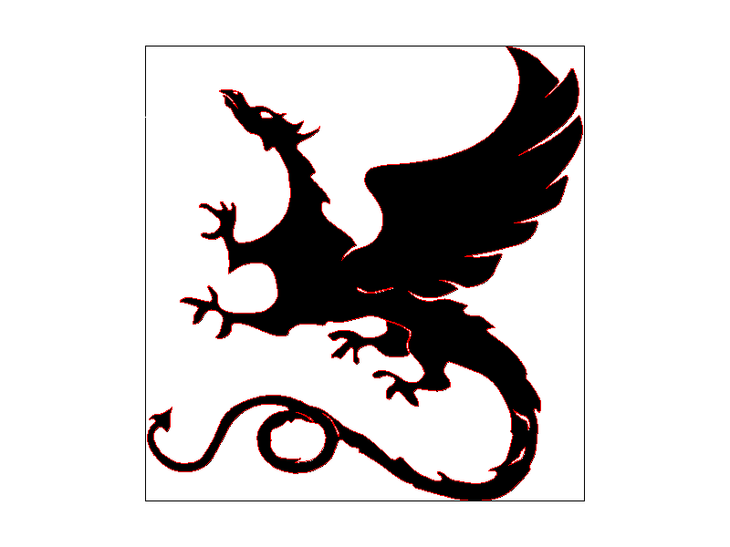

Overview
In this project, I implemented a basic 2-D shading pipeline, including rasterizing single-color triangles, antialiasing by supersampling, building transform matrices, determining Barycentric coordinates, and texure mapping with mipmaps.
Section I: Rasterization
Part 1: Rasterizing single-color triangles
In the first task, I performed point-in-triangle tests for each pixel within a range determined by x and y coordinates of the three vertices, regardless of the winding order of the vertices (i.e. clockwise or counter-clockwise).
|

|

|

|

|
Part 2: Antialiasing triangles
Part 3: Transforms
Section II: Sampling
Part 4: Barycentric coordinates
Part 5: "Pixel sampling" for texture mapping
Part 6: "Level sampling" with mipmaps for texture mapping
Section III: Art Competition
If you are not participating in the optional art competition, don't worry about this section!